Hoofdstuk 9 beschrijft de loadflowberekening, die altijd als eerste op het model van een net wordt uitgevoerd. De loadflowberekening geeft informatie over de verdeling van de stromen in alle kabels en overige verbindingen van het net. Bovendien worden met deze berekening alle spanningen op de knooppunten vastgesteld. Bij de berekening wordt uitgegaan van de vermogens die de belastingen opnemen en die de productie-eenheden leveren. Bovendien zijn de schakeltoestanden in het net en de instellingen van componenten, zoals regelbare transformatoren, van belang.
De loadflowberekening is gericht op het toetsen van het netontwerp aan de bedrijfscriteria tijdens normaal bedrijf en tijdens uitzonderlijk bedrijf, zoals storings- en onderhoudssituaties. Hierbij worden spanningen, stromen en vermogensverdeling berekend. Ook verliezen in het net kunnen met de loadflowberekening worden vastgesteld.
Apparaten die op het elektriciteitsnet worden aangesloten zijn gespecificeerd om goed te functioneren indien de stromen en spanningen zich binnen specifieke grenzen bevinden. Een al te grote afwijking van deze grenzen kan beschadiging of versnelde veroudering van het apparaat tot gevolg hebben. Dit geldt niet alleen voor apparatuur van aangeslotenen, maar ook voor de componenten van het netwerk zelf, die moeten worden beschermd tegen hoge overspanningen en te grote stromen, veroorzaakt door overbelasting of kortsluiting. Ten behoeve van het plannen, analyseren en bedrijfsvoeren van een elektrisch net op elk spanningsniveau worden loadflowberekeningen gemaakt. Deze berekeningen dienen onder andere voor het verkrijgen van inzicht omtrent:
Omdat de netspanning en de stroombelastbaarheid van componenten onder alle normale omstandigheden binnen specifieke grenzen moeten blijven, is het nodig aan de hand van loadflowberekeningen de meest voor de hand liggende situaties te analyseren. Een distributienet wordt geanalyseerd bij hoge en lage belasting en bij veel en weinig decentrale opwekking. Maar ook storingssituaties moeten doorgerekend worden. De spanningsgrenzen liggen op internationaal niveau vast en de grenzen voor de belastbaarheid zijn door de fabrikant bepaald of worden door de netbeheerder aan veilige zijde vastgelegd. Het inzicht wordt verkregen aan de hand van de resultaten van een loadflowberekening, waarvan stromen en spanningen de belangrijkste zijn. Kort samengevat levert een loadflowberekening de volgende resultaten:
Om de berekeningen te kunnen uitvoeren zijn technische gegevens van alle componenten nodig. De belangrijkste gegevens zijn:
De methode die het meest wordt toegepast om de spanningen en stromen in een elektriciteitsnet te berekenen is de loadflow volgens Newton-Raphson. De methode is voor het eerst beschreven in 1959 (Van Ness, 1959) en later in 1967 (Tinney, 1967) en is met succes beproefd en is wereldwijd geaccepteerd.
Bij het analyseren van distributienetten wordt in het algemeen uitgegaan van symmetrisch belaste symmetrische netten. Dat wil zeggen dat de distributienetten driefasensymmetrisch zijn aangelegd en tevens driefasensymmetrisch zijn belast. Deze aanname is in de Nederlandse HS- en MS-distributienetten gerechtvaardigd. Hierdoor kan worden volstaan met een éénfasige voorstelling van het net in de loadflowberekening en hoeft niet aan alle drie de fasen te worden gerekend. Het netmodel dat wordt gebruikt is dat van het normale systeem (zie hoofdstuk 7). In de meeste West-Europese netten geldt deze aanname ook, maar in bijvoorbeeld Amerikaanse distributienetten mag dat niet zonder meer gedaan worden, omdat die netten op een andere manier worden bedreven en er vaak sprake is van asymmetrie, zowel in aanleg als in belasting.
Bij het analyseren van LS-distributienetten kan niet altijd worden uitgegaan van het model van symmetrisch belaste symmetrische netten. Ten eerste is het net niet perfect symmetrisch omdat de toegepaste kabels met drie fasegeleiders en een nulgeleider zijn uitgerust. Hierdoor zijn de impedanties tussen de drie fasegeleiders onderling niet gelijk aan elkaar. Hetzelfde geldt voor de impedanties tussen de fasegeleiders en de nulgeleider. Ten tweede zijn de belastingen in de LS-netten niet altijd perfect driefasensymmetrisch verdeeld. Om die reden wordt voor berekeningen aan deze netten een uitgebreid driefasig model toegepast.
De basis voor alle netberekeningen wordt gelegd door de Wet van Ohm en de Wet van Kirchhoff. Omdat in distributienetten met wisselstromen gewerkt wordt, worden alle berekeningen in het complexe vlak uitgevoerd. Spanning, stroom, impedantie en vermogen zijn complexe getallen die in modulus en argument kunnen worden gepresenteerd of met hun reële en imaginaire waarde. Dit wordt in figuur 9.1 toegelicht aan de hand van een elementair netwerk met een verbinding met knooppunten aan beide zijden en een referentie aan de onderzijde. De verbinding heeft een impedantie Z = R + jX en de stroom I is het gevolg van een belastingtransport vanuit het linkerknooppunt ter grootte van S = P + jQ.
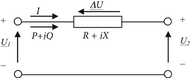De spanningen op het linker- en rechterknooppunt zijn respectievelijk U1 en U2 ten opzichte van de referentie. Het spanningsverschil ΔU over de verbinding is afhankelijk van de impedantie en de stroom. Onderstaande relaties gelden:
[ |
9.1 |
] |
Dus voor de spanning op het rechterknooppunt geldt:
[ |
9.2 |
] |
De spanning U2 op het rechterknooppunt kan in een vectordiagram worden afgebeeld, aangenomen dat de spanningsvector U1 een fasehoek van φ1 graden maakt ten opzichte van de reële as. De stroomvector I maakt een hoek φ met de spanningsvector U1. In het vectordiagram is duidelijk zichtbaar dat het spanningsverschil ΔU is opgebouwd uit twee vectoren, waarvan de vector –R·I evenwijdig loopt aan de stroomvector en de vector –jX·I haaks op de stroomvector staat. In dit voorbeeld is de waarde van R iets groter dan de waarde van X.
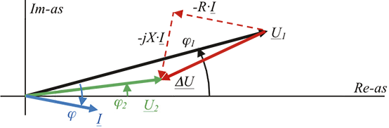Aangezien ook geldt:
[ |
9.3 |
] |
gaat formule 9.1 voor het spanningsverschil over in:
[ |
9.4 |
] |
De spanning U2 aan de andere zijde van de verbinding kan nu eenvoudig worden berekend:
[ |
9.5 |
] |
Indien wederom aangenomen wordt dat de spanningsvector U1 een fasehoek van φ1 graden ten opzichte van de reële as maakt, kunnen de spanningsvectoren afgebeeld worden in onderstaand vectordiagram. In figuur 9.3 is duidelijk zichtbaar dat het spanningsverschil ΔU is opgebouwd uit twee vectoren, waarvan de vector –(RP+XQ)/U1* evenwijdig loopt aan de spanningsvector U1 en de vector –j(XP-RQ)/U1* haaks op de spanningsvector U1 staat. In het diagram heeft de spanning U2 een fasehoek van φ2 graden.
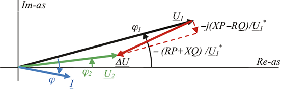Het is dus mogelijk de waarde van het spanningsverschil ΔU in termen van de impedantie en het getransporteerde vermogen uit te drukken. In figuur 9.3 valt op dat de absolute waarde van het spanningsverschil voor het grootste deel wordt bepaald door de vector –(RP+XQ)/U1 * die evenwijdig loopt met de spanningsvector U1. Hierdoor geldt bij benadering voor het spanningsverschil:
[ |
9.6 |
] |
Met U1 = |U1|. Deze benadering gaat alleen op voor kleine waarden van ΔU, tot ongeveer 10% van U1. In dezelfde figuur 9.3 valt op dat de hoekverdraaiing van de spanningsvectoren U1 en U2 ten opzichte van elkaar voor het grootste deel bepaald wordt door de vector –j(XP-RQ)/U1*, die haaks staat op de spanningsvector U1.
De absolute waarde en de hoek van het spanningsverschil over een verbinding zijn dus afhankelijk van de impedantie van de verbinding en het te transporteren vermogen. Hierin speelt de verhouding van R en X van de verbinding een grote rol. In een bovengronds hoogspanningsnet is bijvoorbeeld de reactantie veel groter dan de weerstand, waardoor de grootte van het spanningsverschil voornamelijk bepaald wordt door het transport van blindvermogen (het product XQ in vergelijking 9.6). In bekabelde laagspanningsnetten is daarentegen de weerstand veel groter dan de reactantie, waardoor in dat geval de grootte van het spanningsverschil voornamelijk bepaald wordt door het transport van actieve vermogen (het product RP in vergelijking 9.6). In MS-netten zijn weerstand en reactantie van dezelfde ordegrootte, waardoor de spanning zowel door het actieve vermogen als door het blindvermogen bepaald wordt. Tabel 9.1 geeft een overzicht.
Spannings-niveau |
Type |
R/X |
Hoofdoorzaak van spanningsverschil |
Hoofdoorzaak van hoekverdraaiing |
HS |
Lijn |
<< 1 |
Q |
P |
MS |
Kabel |
1 ... 5 |
P en Q |
P en Q |
LS |
Kabel tot 150 mm2 |
>> 1 |
P |
Q |
Uit de tabel blijkt dat alleen bij hoogspanningsnetten en laagspanningsnetten een eenvoudige uitspraak gedaan kan worden over de relatie tussen het spanningsverschil en het getransporteerde vermogen. In het geval dat de R/X verhouding in de ordegrootte van 1 komt, zoals bij alle middenspanningsnetten, wordt het spanningsverschil altijd veroorzaakt door een combinatie van het actieve vermogen en het blindvermogen. De invloed van de R/X verhouding op de spanningshuishouding is al merkbaar bij het verschil tussen het toepassen van een circuit met drie enkeladerige kabels of met een drieaderige kabel. Het verschil is dat de reactantie van drie enkeladerige kabels groter is dan van een drieaderige kabel. Figuur 9.4 toont de spanningsdaling bij een belasting van 5 Mvar achter een 10 km lange drieaderige MS-kabel (R=1,26 Ω, X=0,89 Ω). Figuur 9.5 toont de spanningsdaling bij een zelfde belasting van 5 Mvar achter een 10 km lang circuit met enkeladerige MS-kabels (R=1,26 Ω, X=1,6 Ω). Duidelijk zichtbaar is dat het blindvermogenstransport een grotere spanningsdaling veroorzaakt bij een circuit met enkeladerige kabels (R/X=0,8) dan bij een circuit met een drieaderige kabel (R/X=1,4).
Voor een loadflowberekening zijn drie typen knooppunt belangrijk. Deze typen onderscheiden zich doordat er alleen belasting is aangesloten, een spanningsgeregelde synchrone machine of een netvoeding. Tabel 9.2 geeft een overzicht.
Knooppunt met: |
Type |
Bekende parameters |
Onbekende variabelen |
Belasting |
PQ |
P en Q |
|U| en arg(U) |
Spanningsgeregelde generator |
PU |
|U| en P |
Q en arg(U) |
Netvoeding (swingbus) |
UT |
|U| en arg(U) |
P en Q |
Afhankelijk van wat er op de knooppunten is aangesloten, zijn er bekende parameters en onbekende variabelen. Van een belasting is gespecificeerd hoeveel actief vermogen en blindvermogen deze wil opnemen. De waarde van de spanning en de hoek van de spanningsvector op het knooppunt worden door de loadflow berekend. Van een spanningsgeregelde generator zijn de waarde van de spanning op het knooppunt en het door de generator geproduceerde actieve vermogen gespecificeerd. De loadflow berekent het door de generator geproduceerde blindvermogen en de hoek van de spanningsvector op het knooppunt. Van een netvoeding is de absolute waarde van de spanning een vast gegeven en wordt de hoek van de spanning ten opzichte van een referentie meestal op nul graden gehouden. De loadflow berekent het door de netvoeding geleverde of opgenomen actieve en reactieve vermogen. Dit is het resultaat van alle opgenomen en geproduceerde vermogens, inclusief de verliezen. In de volgende paragrafen wordt nader ingegaan op deze drie typen.
Zoals in hoofdstuk 8 beschreven, is het vermogen dat de belasting opneemt afhankelijk van de spanning. In de meeste loadflowprogramma's kan worden gekozen uit drie belastingsmodellen voor het actieve vermogen P en voor het blindvermogen Q, namelijk:
Bij een belasting die zich gedraagt als een afname van constant vermogen zal bij een afnemende spanning de belastingstroom toenemen, want het product van spanning en stroom moet immers constant blijven. Bij een belasting die zich gedraagt als een afname van constante stroom zal bij een afnemende spanning het opgenomen vermogen recht evenredig met de spanning afnemen. Bij een belasting die zich gedraagt als een constante impedantie, neemt bij een afnemende spanning de stroom lineair af volgens de wet van Ohm. Als gevolg neemt het opgenomen vermogen dan kwadratisch af. Tabel 9.3 vat het spanningsafhankelijke gedrag voor deze drie typen samen.
In formulevorm kan de belasting worden beschreven als functie van de genormeerde spanning met exponent p voor het actieve vermogen en q voor het blindvermogen:
[ |
9.7 |
] |
met:
| Pnom | actief vermogen bij nominale spanning |
| Qnom | blindvermogen bij nominale spanning |
| |U| | actuele spanning |
| Unom | nominale spanning |
Belastingsmodel |
Spanningsafhankelijkheid van het vermogen |
p, q |
Constant vermogen |
constant |
0 |
Constante stroom |
lineair |
1 |
Constante impedantie |
kwadratisch |
2 |
Figuur 9.6 geeft het verband tussen spanning en vermogen weer voor de drie modellen van tabel 9.3. De horizontale lijn stelt het constante vermogensmodel voor, onafhankelijk van de spanning. Van het constante stroommodel neemt het vermogen lineair toe met de spanning en bij het constante impedantiemodel is dat kwadratisch. Beide laatste modellen beginnen bij de oorsprong. Alle belastingsmodellen gaan door het gezamenlijke punt, dat gekarakteriseerd wordt door het nominale vermogen dat bij de nominale spanning wordt opgenomen.
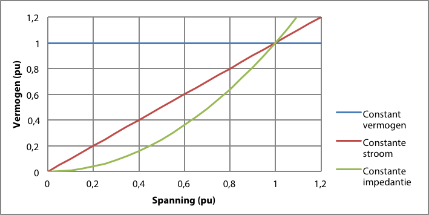Vaak wordt het constante stroommodel niet direct ondersteund. In dat geval is het gebruikelijk het constante stroommodel te benaderen met de combinatie van 50% constant vermogen en 50% constante impedantie. Voor spanningen tussen 0,8 en 1,2 pu is de afwijking van de benadering ten opzichte van het constante stroommodel hoogstens 2,5%. Figuur 9.7 illustreert dit.
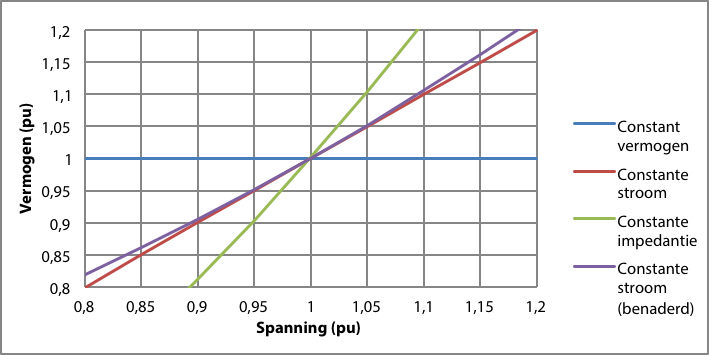Het is voor praktische gevallen gebruikelijk de belasting te modelleren met een aandeel constant vermogen en een aandeel constante impedantie. Door de actieve en reactieve belasting bij nominale spanning op te delen in een aandeel constant vermogen en een aandeel constante impedantie, kunnen de meeste gevallen goed berekend worden. Dit model is beschreven in hoofdstuk 8. Het complexe vermogen wordt dan als volgt berekend:
[ |
9.8 |
] |
De impedantie voor het constante impedantie-aandeel wordt berekend uit de nominale spanning:
[ |
9.9 |
] |
Hoofdstuk 8 geeft voor een aantal typen belasting het spanningsafhankelijke gedrag. Het reactieve deel van de belasting in MS- en LS-netten gedraagt zich in veel gevallen als een constante impedantie. Het actieve deel kan worden samengesteld uit een aandeel constant vermogen en een aandeel constante impedantie. Tabel 9.4 geeft een overzicht van de spanningsafhankelijkheid van een aantal bekende typen.
Type belasting |
Aandeel constant vermogen (%) |
Aandeel constante impedantie (%) |
Industrieel |
90 |
10 |
Asynchrone machine |
100 |
0 |
Geschakelde voeding |
100 |
0 |
Zakelijk |
35 |
65 |
Woningen |
30 |
70 |
Gloeilampen |
0 |
100 |
Elektrische verwarming |
0 |
100 |
Airconditioner |
75 |
25 |
Verlichting |
25 |
75 |
De invloed van het getransporteerde vermogen op de spanning in het netwerk en op de verliezen wordt het beste toegelicht aan de hand van een belasting met een constant vermogensgedrag. Het netwerk van figuur 9.8 wordt gevoed door een oneindig sterke voedingsbron op 10,5 kV gekoppelde spanning.
De verbinding is een 10 km lange kabel van het type 3 x 150 Cu XLPE 6/10. De impedantie over de gehele lengte is: R = 1,26 Ω en X = 0,93 Ω.
De belasting van 4,67 MW en 1,76 Mvar veroorzaakt een vermogenstransport van 5,0 MW en 2,0 Mvar vanuit de voeding. Dit komt overeen met een arbeidsfactor van 0,93. Het vermogen per fase is bij de voeding: 1,67 MW en 0,67 Mvar.
De fasespanning op het voedingsknooppunt is:
[ |
9.10 |
] |
Het spanningsverschil is, volgens vergelijking 9.6:
[ |
9.11 |
] |
De spanning aan de belastingszijde is:
 |
[ |
9.12 |
] |
De stroom volgt uit vergelijking 9.1:
 |
[ |
9.13 |
] |
Het vermogen dat de belasting per fase opneemt is dan volgens vergelijking 9.3 gelijk aan:
[ |
9.14 |
] |
Dit komt overeen met een door de belasting opgenomen driefasig vermogen van 4,67 MW en 1,76 Mvar. Het vermogen aan belastingzijde is kleiner dan het vermogen aan voedingzijde, omdat de spanning op het belastingsknooppunt lager is dan op het voedingsknooppunt en de stroom gelijk is. Het verschil tussen het vermogen aan de voedingszijde en het vermogen aan de belastingszijde is gelijk aan het verlies in de verbinding: Sverlies = 0,34 + 0,12 Mvar.
Het reële deel kan ook als volgt berekend worden:
[ |
9.15 |
] |
Door de belasting stapsgewijs te variëren ontstaat een overzicht van de invloed van belastingvariatie op de spanning. Figuur 9.9 toont de spanning op het belastingsknooppunt waarbij het actieve vermogen P van de belasting is gevarieerd tussen –5 en 5 MW en het blindvermogen Q is gevarieerd van –5 tot 5 Mvar. De spanning voor elke combinatie van P en Q is afgebeeld op een vlak in de driedimensionale grafiek. Figuur 9.9 laat zien dat de invloed van variatie van het actieve vermogen en het blindvermogen op de spanning in het voorbeeldnet ongeveer even groot is. Dit komt overeen met het gestelde in tabel 9.1 voor een MS-net.
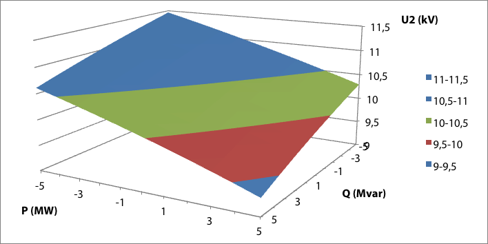In het eenvoudige voorbeeldnet van figuur 9.8 met een voeding, een impedantie en een belastingsknooppunt is een belasting met vermogen P+jQ aangesloten. Deze belasting heeft een arbeidsfactor cos(φ). De relatie tussen het getransporteerde vermogen en de spanning aan de kant van de belasting vertoont een karakteristieke curve, die de U-P-curve van een verbinding wordt genoemd. Deze curve wordt als volgt berekend (Cigré, 1986),(Johansson, 1995):
[ |
9.16 |
] |
De curven zijn weergegeven in figuur 9.10 voor diverse waarden van cos(φ). De curven laten zien dat er een maximum is voor het vermogen P+jQ dat over een verbinding met impedantie R+jX getransporteerd kan worden. In dezelfde figuur valt het bovendien op dat theoretisch een vermogen getransporteerd kan worden op twee spanningen. De bovenste helft van elke U-P-curve geeft aan dat bij toenemend getransporteerd vermogen de spanning bij de belasting daalt. Dit is een normale situatie. De onderste helft van elke curve geeft in het gestreepte deel aan dat bij een afnemende belasting de spanning op het afnamepunt afneemt. Dit is geen stabiele situatie en zal dus in de werkelijkheid niet voorkomen. Als het gevraagde vermogen groter is dan het maximale vermogen, zal de spanning instorten tot nul. Dit wordt ook wel spanningsinstorting of 'Voltage Collapse' genoemd. Een loadflowberekeningsprogramma zal in dat geval een melding genereren dat de loadflow niet opgelost kan worden.
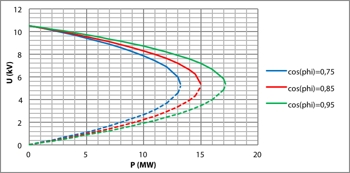Het is dus niet mogelijk bij een gegeven cos(φ) meer vermogen te transporteren dan het meest rechtse punt in de U-P-curve aangeeft. Onderstaande afbeelding geeft het resultaat van de loadflowberekening van het voorbeeldnet voor het maximale vermogen van een van de curven: een belasting van 17 MW bij een cos(φ) van 0,95. Overigens is deze belasting veel groter dan de gespecificeerde maximale belastbaarheid van de kabel.
Bij toepassing van het constant vermogensmodel kan het gebeuren dat wegens spanningsinstorting, zoals beschreven in paragraaf 9.2.2, de loadflow niet berekend kan worden omdat bij afnemende spanning de belastingstroom toeneemt. In dat geval schiet de oplossing van de loadflowberekening voorbij het meest rechtse punt van figuur 9.10. Bij toepassing van het constante stroommodel of het constante impedantiemodel kan de loadflow in die gevallen echter meestal wel berekend worden. Indien de loadflow niet opgelost kan worden, wordt dan ook aanbevolen om het probleem te onderzoeken door het constante impedantiemodel te kiezen. In de meeste gevallen zal blijken dat de gespecificeerde vermogens te groot zijn voor de gebruikte verbindingen.
Een valkuil ontstaat bij het gebruik van een belasting met het gedrag van 100% constant vermogen achter een spanningsgeregelde transformator. Indien de grootte van de belasting van dezelfde grootteorde is als het nominale vermogen van de transformator, kan een ongewenste wisselwerking tussen de belasting en de transformatorregeling ontstaan. Beter is het in dat geval de belasting met een constante stroom of constante impedantie te modelleren.
In het algemeen veroorzaakt een generator een spanningsverandering in de elektrische nabijheid van het aankoppelingspunt. De procentuele spanningsverandering op het aankoppelingspunt kan worden geschat met een benaderingsformule (EnergieNed, 1996):
[ |
9.17 |
] |
met:
| SG | nominaal generatorvermogen (MVA) |
| Sk | kortsluitvermogen (MVA) |
| α | fasehoek kortsluitimpedantie (rad) |
| φ | fasehoek generatorstroom (rad) |
Met deze benaderingsformule wordt aanbevolen voor de maximaal toelaatbare spanningsverhoging door decentrale opwekking in MS-netten 2% aan te houden en 3% in LS-netten (EnergieNed, 1996). Figuur 9.12 toont een MS-streng, waarbij op 'Netstation 4' een decentrale opwekker is aangesloten. Indien de schakelaar van de generator is geopend volgt uit de loadflowberekening een spanning van 10,389 kV voor het netstation. Indien het kortsluitvermogen en de fasehoek van de kortsluitimpedantie gegeven zijn, kan met de generatorgegevens de procentuele spanningsverandering worden benaderd. Gegeven wordt dat het kortsluitvermogen gelijk is aan 96 MVA en dat de fasehoek gelijk is aan 0,82 rad (berekend uit Ri = 0,783 Ω en Xi = 0,840 Ω). De gebruikte termen ten aanzien van het kortsluitvermogen en de kortsluitimpedantie worden in hoofdstuk 10 nader toegelicht. Bij een volbelaste generator met een nominaal vermogen van 0,3 MVA en een nominale cos(φ) van 0,85 berekent formule 9.17 een spanningsverandering van 0,3%. Een grotere generator met een nominaal vermogen van 3,0 MVA en een nominale cos(φ) van 0,85 levert een spanningsverandering van 3,0%.
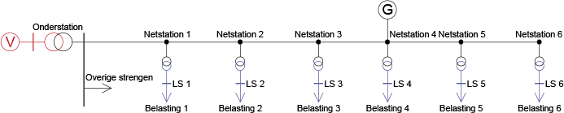De loadflowberekening moet dit bevestigen. De spanning is bij toepassing van de generator van 0,3 MVA gestegen naar 10,419 kV, hetgeen overeenkomt met 0,3% spanningstijging. Bij toepassing van een 3,0 MVA generator blijkt de spanning inderdaad met ongeveer 3% te stijgen naar 10,684 kV.
De generatoren worden volgens hoofdstuk 8 gemodelleerd met een cos(φ)-regeling of met een spanningsregeling. In het eerste geval is de verhouding tussen actief vermogen P en blindvermogen Q vast. De generator met een cos(φ)-regeling kan in de loadflowberekening dan ook worden gemodelleerd als een negatieve belasting met het constante vermogensmodel.
Indien de generator een spanningsregeling heeft, is het gegenereerde blindvermogen in de loadflowberekening afhankelijk van de actuele spanning ten opzichte van de gewenste spanning op het geregelde knooppunt: de spanning stijgt indien de generator meer blindvermogen produceert. Volgens tabel 9.1 is de invloed in netten met een kleine R/X-verhouding het grootst, zoals in HS-netten en in mindere mate in MS-netten. Het blindvermogen dat de generator kan produceren of opnemen is begrensd tussen Qmin en Qmax. Tussen deze minimum en maximum waarden van het blindvermogen kan de generator door aanpassing van de productie van blindvermogen de spanning beïnvloeden. En andersom bepaalt de afwijking van de actuele spanning ten opzichte van de ingestelde spanning het geproduceerde blindvermogen. Indien de actuele spanning gelijk is aan de ingestelde spanning Uref wordt nul var blindvermogen gegenereerd.
Figuur 9.13 geeft het verband weer tussen de actuele spanning op het geregelde knooppunt en het gegenereerde blindvermogen. De ingestelde spanning is Uref. Indien de actuele spanning gelijk is aan Uref, is het gegenereerde blindvermogen nul. Indien de actuele spanning daalt, zal de generator volgens de schuine lijn meer blindvermogen gaan genereren. Indien de productie van blindvermogen aan de bovengrens Qmax komt, is de spanning lager dan of gelijk aan Umin. Indien de spanning toeneemt, zal de generator minder blindvermogen produceren of zelfs opnemen. Indien de productie van blindvermogen aan de ondergrens Qmin komt, is de spanning hoger dan of gelijk aan Umax.
Bij een verandering van de ingestelde spanning Uref zal de grafiek in zijn geheel naar boven of naar beneden schuiven. Indien de waarde van Uref hoger wordt ingesteld, zal de generator meer blindvermogen produceren en zal de actuele spanning meestijgen.
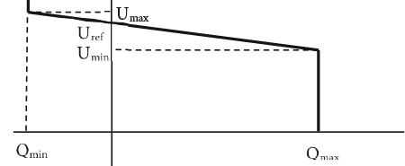De hellingshoek van de lijn tussen Umin en Umax is de spanning-blindvermogenstatiek, die de waarde van de spanningsvariatie representeert als gevolg van een variatie in blindvermogen.
[ |
9.18 |
] |
De berekening van de loadflow is gebaseerd op de wetten van Kirchhoff en Ohm en op het in orde maken van de complexe vermogensbalans:
[ |
9.19 |
] |
Hierin is S het complexe vermogen, bestaande uit actief vermogen en blindvermogen. Het door generatoren opgewekte vermogen wordt opgenomen door de belastingen. De netverliezen zijn een gevolg van het transport van de elektriciteit. Aangezien deze vermogens niet automatisch in balans zijn, is de netvoeding nodig om de vermogensbalans kloppend te maken. Distributienetten zijn in de normale bedrijfssituatie gekoppeld met een extern net, waaruit ze gevoed worden. Dat externe net bestaat uit een netwerk van transportverbindingen, generatoren en belastingen, meestal op een hoger spanningsniveau. De netvoeding representeert dit met een constante spanningsbron en een netimpedantie, zoals beschreven in hoofdstuk 8.
Het actieve vermogen en het blindvermogen dat de netvoeding levert of opneemt is het resultaat van de loadflowberekening. Daarnaast is de spanning van de netvoeding gegeven en constant, zowel in grootte als in hoek. In de loadflowtechniek wordt een knooppunt waarop de netvoeding is aangesloten ook wel swingbus genoemd.
Voor de goede werking van apparatuur moet de spanning binnen bepaalde grenzen blijven. Op internationaal niveau zijn daarom afspraken gemaakt over de hoogte van de nominale netspanning en de toegestane afwijkingen ervan. Deze zijn vastgelegd in de internationale norm IEC 50160. De norm schrijft de eisen ten aanzien van de spanning in openbare LS- en MS-netten voor. De nominale spanning voor laagspanningsnetten is 230 V. De meeste West-Europese landen hadden voor 1995 een nominale spanning van 220 V. Het Verenigd Koninkrijk had een nominale spanning van 240 V. De nominale waarde van 230 V is ontstaan uit een compromis om te komen tot een Europese standaard. De nominale spanning voor de middenspanningsnetten kan per regio verschillen, zodat de norm spreekt van een gespecificeerde spanning (declared voltage), ingedeeld in de categorie tussen 1 en 35 kV. De eisen voor langzame spanningsvariaties tijdens normale bedrijfsvoering zijn overgenomen door de Energiekamer (Netcode, 2009).
De mogelijkheid om tijdelijk een spanningsdaling van 15% toe te staan is bedoeld voor de gevallen van onderhoud of reparatie, waarbij het netwerk anders geschakeld moet kunnen worden. Voor de gewone bedrijfssituaties moet het net zodanig worden ontworpen dat de spanning over een grote periode gemiddeld genomen zo goed mogelijk binnen de marges blijft. Hierbij zijn de instellingen van de distributietransformatoren en de blindvermogensverdeling van belang. Een goede cos(φ) kan daartoe bijdragen. Langzame belastingsvariaties, zoals over een dag, kunnen worden opgevangen met behulp van de spanningsregelingen op de voedingstransformatoren.
In een elektriciteitsnet gaat het transport van elektrisch vermogen altijd gepaard met variaties van de spanningen op de knooppunten. De spanningsvariaties in het distributienet worden veroorzaakt door gebeurtenissen in het HS-net en door het vermogenstransport over de kabelverbindingen en de transformatoren. Spanningsvariaties worden in de onderstations automatisch gecompenseerd met behulp van een spanningsregeling op de HS/MS-transformator. De voedingstransformator wordt daartoe uitgerust met een regelbare trappenschakelaar aan de primaire zijde. De trappenschakelaar wordt aangestuurd door een regeling die de spanning op de MS-zijde meet en binnen grenzen probeert te houden. Omdat de regeling een discrete trappenschakelaar aanstuurt, is het niet mogelijk de spanning aan de secundaire zijde exact een gewenste waarde te laten zijn. Het kan voorkomen dat soms twee of meer trapstanden mogelijk zijn, afhankelijk van de trapgrootte ten opzichte van de te regelen spanningsband. Gebruikelijke trapstanden voor de voedingstransformator zijn: 21 trappen van 1,5%.
In de laagspanningsnetten is geen sprake van automatische spanningsregeling en kan de trapstand op de MS/LS-distributietransformator handmatig worden ingesteld, zodanig dat alle spanningsvariaties binnen de gespecificeerde grenzen blijven. De distributietransformator is hiertoe instelbaar met 5 trappen op: –7,5%, –5%, –2,5%, 0% en +2,5%.
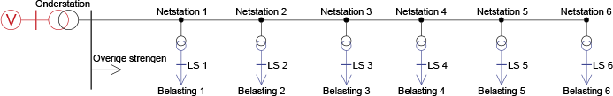Figuur 9.14 geeft een voorbeeld van een typische MS-streng met netstations. Op een onderstation zijn doorgaans 20 velden met MS-strengen aangesloten. De belasting van de overige MS-strengen zijn geconcentreerd in een MS-belasting op de MS-rail van het onderstation.
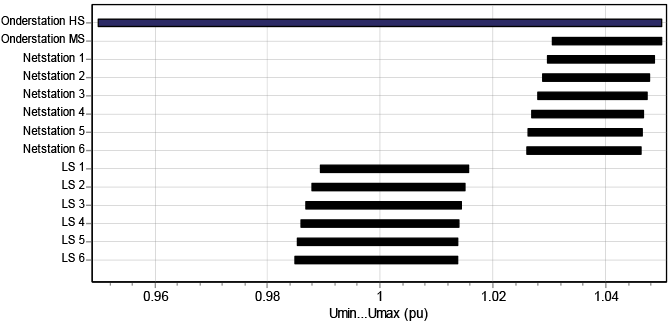Op dit net is een simulatie uitgevoerd met een variërende spanning aan de HS-zijde van de voedingstransformator en dagelijks variërende belastingen. De variaties zijn opgenomen in profielen als functie van de tijd, waarvan voor elke waarde een loadflowberekening wordt gemaakt. Figuur 9.15 toont de knooppuntspanningen van de HS-rail tot en met alle LS-rails als resultaat van de loadflowberekening voor de profielen. De spanning is weergegeven in pu. Duidelijk zichtbaar is de variatie van de spanning op de HS-rail van het onderstation, die ingesteld was op plus en min 5%. Door de regelactie van de voedingstransformator blijft de variatie op de MS-rail van het onderstation beperkt tot ongeveer 2%. De spanningsvariatie neemt in de richting van 'Netstation 6' niet noemenswaard toe. De hoogte van de spanning neemt in die richting iets af. Ook goed zichtbaar is dat de spanningsvariatie op de LS-rails met ongeveer 3% iets groter is dan op de MS-rails van de netstations. Dit wordt veroorzaakt door de impedantie van de distributietransformatoren.
Indien achter de voedingstransformator het MS-net uitgestrekt is, wordt soms stroomcompensatie (compoundering) toegepast. Hierbij is naast de spanning aan MS-zijde ook de belastingstroom van invloed op de regeling van de trappenschakelaar. Bij een stijgende belastingstroom zal de geregelde spanning aan secundaire zijde extra toenemen, zodat de waarde van MS- en LS-spanning in het net binnen de toegestane grenzen blijft. Figuur 9.16 illustreert dit.
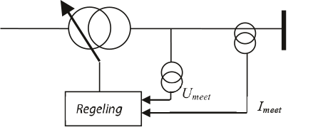Van de spanning die voor de regeling gebruikt wordt, wordt een correctie afgetrokken, die afhangt van de belastingstroom en een gekozen compensatie-impedantie.
[ |
9.20 |
] |
Figuur 9.17 geeft de secundaire spanning van de voedingstransformator weer als functie van het door de transformator getransporteerde vermogen. Zonder regeling neemt de spanning door de transformatorimpedantie af bij toenemend vermogen. Door aanwezigheid van een gewone spanningsregeling wordt bij het onderschrijden van een spanningsgrens de trappenschakelaar versteld, waardoor een getrapte curve ontstaat die zich tussen de onder- en bovengrens bevindt. Door aanwezigheid van een spanningsregeling met stroomcompensatie zal de gecompenseerde regelspanning eerder een spanningsgrens onderschrijden en vindt het verstellen van de trappenschakelaar eerder plaats. Hierdoor stijgt de getrapte curve met toenemend vermogen.
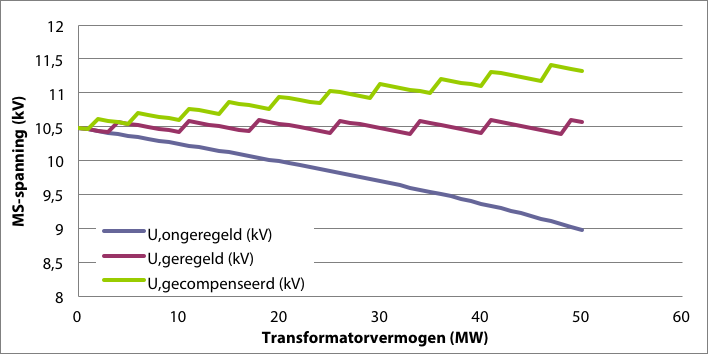De compensatiefactor wordt opgegeven in Ohm en zorgt ervoor dat de regeling een iets verlaagde spanning 'ziet' als gevolg van een toegenomen stroom in de streng. De compensatie zorgt ervoor dat de spanning in een lange streng gemiddeld aan de door de gebruiker gestelde eisen voldoet. Bij een grote stroom zal de regeling ervoor zorgen dat de spanning extra verhoogt en daardoor in de MS-streng op een gemiddelde afstand van de voedingstransformator verbeterd wordt. Figuur 9.18 illustreert dit met het spanningsprofiel voor alle knooppunten, verdeeld over een lange streng, van voedingstransformator tot aan het einde. Het spanningsprofiel vertoont een dalende lijn door een vermogenstransport vanuit de voedingstransformator. Zonder compensatie ligt de spanning alleen dichtbij het voedingsstation tussen de opgegeven minimale en maximale waarde van de spanning. De spanning aan het einde van de streng kan kleiner worden dan de minimum spanning. Met compensatie is het spanningsprofiel in de streng gemiddeld verbeterd, doordat deze nu regelt op een fictief punt in de buurt van het midden van de streng. Als resultaat bevinden de spanningen van alle knooppunten in de streng zich tussen de grenzen.
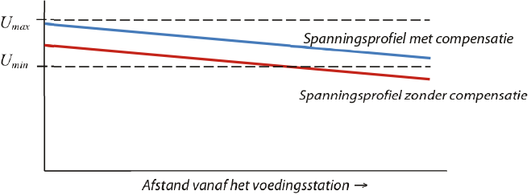Door toepassen van stroomcompensatie is de spanningsvariatie als gevolg van de variërende belasting aan het einde van de streng kleiner dan bij een spanningsregeling zonder stroomcompensatie. Hierdoor kan een zware belasting minder snel aanleiding geven tot onderschrijden van de spanningsgrens. Door toepassen van stroomcompensatie kunnen ook langere kabels worden toegestaan.
Indien zich dicht bij de geregelde transformator decentrale opwekkers bevinden, moet stroomcompensatie met beleid worden toegepast. Het opgewekte vermogen vermindert de belastingstroom door de voedingstransformator, waardoor de spanning aan het einde van de streng toch buiten de spanningsgrenzen kan treden. Dit kan worden voorkomen door de decentrale opwekking op een apart veld aan te sluiten, waarvan de stroom niet voor de stroomcompensatie wordt gebruikt. Indien dat niet mogelijk is, moet de stroom van de decentrale opwekkers in de regeling worden afgetrokken van de te compenseren belastingstroom. Deze mogelijkheid wordt door diverse fabrikanten aangeboden (Hiscock, 2007).
In uitgestrekte MS-netten worden soms regeltransformatoren toegepast, die staan opgesteld in regelstations. Hiermee kan lokaal en onafhankelijk van de spanningsregeling in het voedingsstation de spanning in een achtergelegen deel van de streng worden geregeld. Regeltransformatoren zijn spaartransformatoren of boostertransformatoren. Net als bij de voedingstransformatoren wordt de spanning geregeld door met behulp van een trappenschakelaar de overzetverhouding te wijzigen. De besturing van de trappenschakelaar wordt verzorgd door een automatische spanningsregeling, die de spanning aan de secundaire zijde meet. Het voordeel is dat de spanning in een gebied met een verschillend belastingspatroon onafhankelijk geregeld kan worden. Nadelen zijn de hoge kosten en het verlaagde kortsluitvermogen.
In het netwerk komen naast regelbare transformatoren ook synchrone generatoren met spanningsregeling voor. De regelactie van deze componenten beïnvloedt de spanningen in het netwerk en daarmee de stromen en de belastingstromen. In de praktijk is de regelactie van de generatoren sneller dan de regelactie van de trappenschakelaars van de transformatoren in de onderstations.
De hoek die de stroomvector maakt ten opzichte van de spanningsvector wordt aangeduid met φ. In plaats van de hoek wordt meestal gebruik gemaakt van de cos(φ), ook wel aangeduid met arbeidsfactor of power factor. Bij een kleine hoek is de stroom bijna in fase met de spanning. In dat geval is de cos(φ) ongeveer gelijk aan 1. Bij deze waarde wordt bijna alle stroom gebruikt voor het met actief vermogen verrichten van arbeid. Bij een waarde van cos(φ) die lager is dan 1, wordt niet alle stroom gebruikt voor het verrichten van arbeid. Voor dezelfde hoeveelheid actief vermogen is dan een grotere stroom nodig dan bij een arbeidsfactor van 1. Formule 9.21 beschrijft de relatie tussen het getransporteerde actieve vermogen en de stroom met de cos(φ) in een driefasensysteem.
[ |
9.21 |
] |
In een net met overwegend inductieve belasting ijlt de stroom na op de spanning en wordt blindvermogen opgenomen. Dit blindvermogen wordt door het net getransporteerd en veroorzaakt een toename van de stroom. Een toename van de stroom leidt tot een kwadratische toename van de verliezen in het net. Een verbetering van de cos(φ) leidt tot vermindering van deze extra netverliezen. Bovendien komt door het wegvallen van een hoeveelheid te transporteren blindvermogen meer transportcapaciteit van transformatoren en verbindingen beschikbaar voor het transporteren van actief vermogen. Het is gebruikelijk de cos(φ) te verbeteren met behulp van condensatoren. In hoogspanningsnetten worden regelbare condensatorbanken van 50 tot 150 Mvar ingezet. Op MS-niveau wordt vaak decentraal in de netten gecompenseerd en op LS-niveau op component-niveau, met name bij motoren. Het verlies in de drie fasen van een kabelverbinding is:
[ |
9.22 |
] |
Indien de cos(φ) wordt verbeterd naar cos(φv), is de verhouding van het verlies na en voor de verbetering:
[ |
9.23 |
] |
Bij een verbetering van de cos(φ) van 0,8 naar 0,95 is de verhouding 0,71. Dit betekent een reductie van het verlies van 29%. Doordat een kleinere stroom nodig is voor transport van hetzelfde actieve vermogen, kan na de cos(φ)-verbetering meer actief vermogen worden getransporteerd. De verhouding van de stromen na en voor de verbetering is:
[ |
9.24 |
] |
Bij de verbetering van de cos(φ) van 0,8 naar 0,95 is de verhouding 0,84. Dit betekent een afname van de benodigde stroom met 16%. Hierdoor lijkt de capaciteit van de kabelverbinding toegenomen.
Indien de cos(φ)-verbetering wordt uitgevoerd met een condensatorbank, kan het benodigde blindvermogen (QC) worden berekend uit het verschil van de het blindvermogen voor de verbetering (Q) en er na (Qv ).
[ |
9.25 |
] |
Hieruit volgt voor het benodigde blindvermogen:
[ |
9.26 |
] |
Dit blindvermogen wordt bij nominale spanning opgewekt door een condensatorbank, waarvan de capaciteit in F per fase ten opzichte van het sterpunt gelijk is aan:
[ |
9.27 |
] |
Het transport van de stroom gaat altijd gepaard met verlies, met name in kabels en transformatoren. Voor een elektriciteitsvoorzieningsysteem is het netverlies gelijk aan het verschil tussen het opgewekte en geïmporteerde vermogen en het vermogen dat door de belastingen wordt afgenomen:
[ |
9.28 |
] |
Het actieve deel van het verlies is gelijk aan de warmteontwikkeling in de betrokken componenten. Het blindvermogensverlies is dat niet. In het voorbeeldnet van figuur 9.19 is het verlies voor het gehele net gelijk aan:
Pverlies = Pimport – Pbelasting = 5,00 – 4,67 = 0,33 MW
Qverlies = Qimport – Qbelasting = 2,00 – 1,88 = 0,12 Mvar
Voor elke verbinding van een elektriciteitsnet kan het verlies worden berekend uit de som van de vermogens die aan beide zijden de verbinding invloeien. Figuur 9.20 illustreert dit.
Aan de voedende zijde zijn de vermogens positief. Aan de belastingszijde zijn de vermogens, die de verbinding invloeien, negatief.
[ |
9.29 |
] |
Het verlies kan ook rechtstreeks uit de stroom en de impedantie worden berekend. Hierbij moet rekening worden gehouden met het feit dat de kabel een capaciteit C heeft en daardoor ook zelf blindvermogen opwekt, dat van het verlies moet worden afgetrokken. Het is gebruikelijk de capaciteit van de verbinding in twee gelijke delen op te splitsen en deze aan de van- en naar-zijde van de verbinding te concentreren. Figuur 9.21 toont het gebruikelijke Pi-model van een verbinding. Hierin zijn knooppunt 1 en 2 respectievelijk de knooppunten aan de van- en naar-zijde van de verbinding. De dwars-impedantie wordt meestal alleen gebruikt voor het modelleren van een verliesvrije capaciteit. De totale dwars-impedantie van de verbinding is naar beide zijden van de verbinding evenredig verdeeld over Zd1 en Zd2.
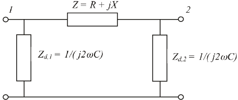De complexe vermogens worden als volgt berekend. Voor het door de capaciteit opgewekte blindvermogen geldt:
[ |
9.30 |
] |
Het totale verliesvermogen in de verbinding, gecorrigeerd voor het in de verbinding opgewekte blindvermogen, is dan:
[ |
9.31 |
] |
Voor het rekenvoorbeeld is de totale capaciteit voor 10 km kabel van het type 3x150 Cu XLPE 6/10 gelijk aan: C = 3,8 μF. De impedantie van deze capaciteit wordt voor 50% op het voedingsknooppunt aangebracht en voor 50% op het belastingsknooppunt, zodat in het rekenmodel het capacitieve blindvermogen op beide knooppunten verdeeld wordt opgewekt. Voor de verliezen in de drie fasen geldt dan:
[ |
9.32 |
] |
Door het verlies worden de betrokken netcomponenten warm. Een al te hoge stijging van de temperatuur leidt tot versnelde veroudering van de componenten. De temperatuur van een belaste kabel is afhankelijk van de stroomsterkte en de omgevingsfactoren, waaronder de mogelijkheid voor warmteafgifte. Voor kabels is dit vastgelegd in de internationale standaard IEC 60287. Ook temperatuurschommelingen kunnen leiden tot versnelde veroudering. Een van de oorzaken van dagelijkse temperatuurschommelingen is de dagelijks cyclisch variërende belastingstroom. Door de temperatuurschommelingen zetten materialen uit en krimpen zij. Bij kabels leidt dit tot zwakke punten in de isolatie, waardoor een spontane kortsluiting kan ontstaan (zie paragraaf 4.1). De toegestane thermische belasting van kabels bij cyclisch variërende belasting is vastgelegd in de internationale norm IEC 60853.
Het verlies van een transformator wordt opgesplitst in kortsluitverlies (of koperverlies) en nullastverlies (of ijzerverlies of magnetiseringsverlies). Het kortsluitverlies is afhankelijk van de getransporteerde stroom en is vergelijkbaar met het actieve vermogensverlies in een verbinding. Het nullastverlies ontstaat door wervelstroomverliezen die in het ijzerpakket van de transformator optreden bij het magnetiseren van de kern. Het nullastverlies is niet afhankelijk van de getransporteerde stroom maar wel van de spanning.
Zoals beschreven in hoofdstuk 8, is het kortsluitverlies gelijk aan:
[ |
9.33 |
] |
Hierin is de weerstand, betrokken op de secundaire zijde, berekend uit het nominale kortsluitverlies Pk (in kW), de nominale spanning (in kV) en het nominale vermogen (in MVA):
[ |
9.34 |
] |
De modellering van het nullastverlies van de transformator is beschreven in hoofdstuk 8. De waarde is gegeven voor de nominale spanning. Hieruit wordt de hoofdveldweerstand berekend.
[ |
9.35 |
] |
Het verlies wordt dan berekend volgens:
[ |
9.36 |
] |
Indien rekening wordt gehouden met verzadiging, kan de exponent in vergelijking 9.36 groter worden. Een waarde van 2,6 wordt wel genoemd (EnergieNed, 1996).
Het verliespercentage op landelijk niveau bedraagt ongeveer 4 tot 5% van de totale elektriciteitsproductie. Dit betreft het verlies in alle HS-, TS-, MS- en LS-netten, inclusief de bijbehorende transformatoren. De verliezen kunnen worden toegerekend naar de diverse niveaus van het elektriciteitsvoorzieningsysteem. Voor de elektriciteitsnetten gelden globaal de volgende kengetallen (EnergieNed, 1996):
Naarmate op een lager spanningsniveau wordt afgenomen, wordt van meerdere bovenliggende spanningsniveaus gebruik gemaakt. Zo is het totale verliespercentage voor elektriciteit die op LS-niveau wordt afgenomen, gemiddeld ongeveer 7 tot 8 %. De kosten van de netverliezen worden via de doorberekening van de brandstofkosten toegerekend naar de diverse verbruikerscategorieën op de verschillende spanningsniveaus.
Het stochastische gedrag van de belasting is besproken in hoofdstuk 3. Hierbij werd het begrip 'gelijktijdigheid' van de belasting geïntroduceerd. Een loadflowberekening kan echter in principe niet goed met gelijktijdigheid van de belasting omgaan. De belastingen worden meestal gespecificeerd voor hun maximale waarden. In werkelijkheid varieert de belasting tussen een minimum en een maximum waarde. De grootte van de belasting is daarom meestal niet exact bekend, maar kan met een kansfunctie worden beschreven (zie hoofdstuk 3). Dit wordt stochastisch gedrag genoemd. Naarmate de omvang van het net afneemt, is het stochastische gedrag belangrijker voor de netontwerper. Bij het plannen van MS- en LS-distributienetten wordt hiermee rekening gehouden. Doet de netontwerper dit niet, zal het net te zwaar worden ontworpen. In deze paragraaf worden drie technieken behandeld die hier meer inzicht in geven:
Er zijn diverse manieren om de ongelijktijdigheid te modelleren. Het eenvoudigst is de gelijktijdigheid te verwerken in alle belastingen. Daartoe worden de belastingen vermenigvuldigd met de gelijktijdigheidfactoren, waardoor zij kleiner worden. Als dit gedaan wordt voor alle belastingen van de netstations, is op deze manier de som van de belasting op het niveau van het onderstation in overeenstemming met de werkelijke waarde, maar zijn de belastingstromen in de MS-strengen kleiner dan de werkelijke waarden. De oorzaak ligt in de ongelijktijdigheid van de belastingen, die ervoor zorgt dat de optredende lokale maximale stromen op hoger niveau 'uitgemiddeld' worden.
Een betere aanpak maakt gebruik van negatieve stroominjecties, waarmee in radiaal bedreven netten de ongelijktijdigheid van de belasting kan worden verwerkt. Hiermee wordt bereikt dat in een lager gelegen netdeel met de maximale belastingen kan worden gerekend, terwijl op een hoger niveau de gelijktijdigheid van de belastingen van het lagere netdeel wordt verwerkt door een negatieve belasting aan te sluiten.
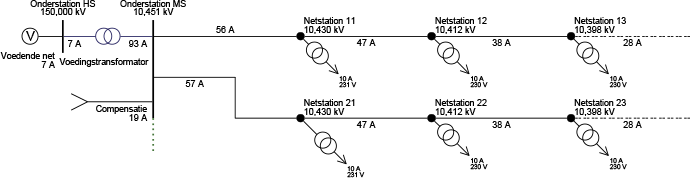Figuur 9.22 illustreert hoe een gelijktijdigheidfactor van 0,82 kan worden verwerkt door op een totale belasting van 113 A (56 plus 57 A in de twee strengen) een negatieve belastingstroom van 19 A op de MS-rail van het onderstation te injecteren. De belastingstroom door de voedingstransformator is als gevolg 93 A, terwijl de belastingstromen in de strengen niet worden verminderd. Het voordeel van deze methode is dat de voedingstransformator niet wordt overgedimensioneerd en dat de kabels in de strengen niet te krap worden ontworpen. In het voorbeeld is de gelijktijdigheid van de belastingen over diverse strengen verwerkt door de negatieve belasting op de voedingstransformator. Het is daarentegen ook mogelijk de gelijktijdigheid van de belastingen op overige punten in het MS-distributienet te verwerken. Dit kan bijvoorbeeld in een zeer lange streng worden gedaan met een negatieve belasting die halverwege de streng of op een splitsingspunt wordt aangebracht. Dit laatste kan worden gedaan in radiaal bedreven netten.
Een stochastische loadflow berekent de extremen van de stromen en spanningen in een distributienet waarin de belastingen zich stochastisch gedragen. Hierbij wordt ervan uitgegaan dat de belastingen kunnen worden gemodelleerd met normaal verdeelde kansfuncties. Dit is een benadering van de werkelijkheid, waarmee in praktijk nauwkeurig genoeg gewerkt kan worden. Belastingen die zich niet als een normaal verdeelde kansfunctie gedragen, zoals zeer grote aan- en uitschakelende belastingen en decentrale opwekinstallaties, kunnen niet met de stochastische loadflow worden berekend. Deze methode is met name geschikt voor het berekenen van de loadflow in LS-distributienetten (Phase, 2008).
Alle normaal verdeelde stochastische belastingen kunnen volgens hoofdstuk 3 beschreven worden met hun gemiddelde waarde en een spreiding. De stochastische loadflow berekent eerst de loadflow voor de gemiddelde waarden van alle stochastische belastingen. Het resultaat bestaat uit de gemiddelde waarden voor de spanningen (Ugemiddeld) en stromen (Igemiddeld) in het net. Daarna worden de stromen en spanningen in het net uitgerekend voor de situatie dat de netvoeding is uitgeschakeld en dat op de plaats van alle stochastische belastingen een stroom wordt geïnjecteerd ter grootte van de variantie (het kwadraat van de spreiding) van de betreffende stochastische kansverdeling. Met deze berekening worden de spreidingen van alle spanningen (Uspreiding) en stromen (Ispreiding) in het net berekend. Hiermee kunnen boven- en ondergrenzen van de stromen en spanningen in het netwerk worden berekend, waarbij het voldoende is om uit te gaan van het optellen en aftrekken van één maal de spreiding:
Figuur 9.23 toont een LS-distributienet, bestaande uit twee strengen met elk 4 LS-kabels, waar op elke kabel 10 vrijstaande woningen zijn aangesloten. Volgens de methode van Velander is de belastingstroom van 10 vrijstaande woningen 24 A (alfa=0,00023, beta=0,023, V=4400 kWh). Volgens dezelfde methode is de belastingstroom van 40 vrijstaande woningen 81 A (aan het begin van iedere streng) en van 80 vrijstaande woningen 153 A (aan de secundaire zijde van de nettransformator).
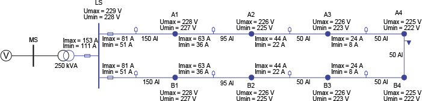In figuur 9.23 zijn voor de knooppunten de minimum en maximum waarden van de spanning weergegeven, gebaseerd op de gemiddelde waarde plus en min één maal de spreiding. Bovendien zijn de minimum en maximum waarden van de stromen weergegeven, ook gebaseerd op gemiddelde waarde plus en min één maal de spreiding. Het valt op dat de berekende maximale waarden van de stromen aan de secundaire zijde van de nettransformator en aan het begin van iedere streng overeenkomen met de volgens de methode van Velander berekende waarden.
Het voordeel van de stochastische loadflow boven de methode van injectie van negatieve belastingen is dat hij ook kan worden toegepast op vermaasd bedreven netten. Als bijvoorbeeld de scheider in de laatste verbinding tussen de knooppunten A4 en B4 wordt gesloten, zal aan de gemiddelde waarden niets veranderen, want beide strengen waren immers gelijk aan elkaar. De gemiddelde waarde van de stroom door de verbinding tussen A4 en B4 is dan ook nul. Echter, de spreiding van de stroom over die verbinding is niet nul: de stochastische loadflow berekent een waarde van 5 A. Als gevolg vermindert ook de spreiding van de overige stroom- en spanningswaarden in het net.
Om goed gebruik te kunnen maken van de capaciteit van kabels en transformatoren in MS-distributienetten moet de planner inzicht hebben in de werkelijk optredende netbelasting en spanningshuishouding. Daarvoor zijn gedetailleerde meetgegevens nodig die, in tegenstellingen tot in transportnetten, in distributienetten niet in ruime mate aanwezig zijn. Bij het dimensioneren van deze netten wordt nog vaak uitgegaan van maximale belastingen, waarbij rekening gehouden wordt met de groei van de individuele gebruikers. Daardoor is er vaak meer transportcapaciteit in de middenspanningsnetten is dan nodig is. Maar omdat in deze netten op beperkte schaal gemeten wordt, ontbreekt voldoende inzicht om die capaciteit te kunnen benutten. De laatste jaren komen steeds meer meetgegevens beschikbaar die het gedrag van gebruikers en gebruikersgroepen typeren. De pseudo state estimation maakt hiervan gebruik. Door de ongelijktijdigheid van belastingen per tijdseenheid te bepalen ontstaat een veel beter inzicht in de netbelasting en spanningshuishouding zonder op elk punt in het net te hoeven meten.
Het doel van pseudo state estimation is het monitoren van middenspanningsnetten op basis van een beperkte hoeveelheid metingen en belastingprofielen. Het monitoren bestaat uit het berekenen van de spannings- en stroomhuishouding in een netwerk, gedurende een periode. Hierbij wordt gebruik gemaakt van het specifieke gedrag van groepen van klanten. In het recente verleden zijn er in Nederland veel gegevens verzameld over het gedrag van de diverse klantengroepen. Door in de pseudo state estimation de metingen in onderstations te combineren met inzichten over het gedrag van de diverse klantengroepen (profielen en samenstelling), ontstaat inzicht in de verdeling van de belasting in het net, waarmee stromen en spanningen berekend kunnen worden.
Een traditionele state-estimator werkt in principe met een meer dan strikt noodzakelijk aantal metingen om de toestand van een net te beschrijven. In tegenstelling werkt de pseudo state estimation met een minder dan noodzakelijk aantal metingen, gecombineerd met kennis van het net en het belastingsgedrag. De methode is toegespitst op gebruik in een MS-distributienet. Hierbij worden metingen in een onderstation gecombineerd met belastingspatronen van netstations. Hierbij dienen de maximaalstroommetingen van netstations als basisverdeling. De belastingspatronen kunnen geconstrueerd worden uit de samenstelling van de klantengroepen per station en de belastingspatronen van de individuele klantengroepen, zoals huishoudens, winkels en kantoren. Ook additionele metingen, zoals bij decentrale opwekkers, kunnen in de methode worden toegevoegd. De pseudo state estimation is gebaseerd op:
Figuur 9.24 illustreert het principe van de pseudo state estimation. Van een voedingstransformator is de belastingstroom gemeten. Van alle netstations zijn de maximale belastingstromen bekend en zijn de belastingsprofielen geschat.
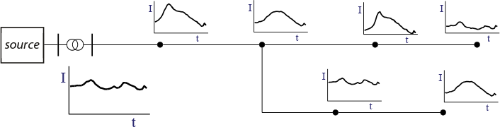Als de samenstelling met standaardbelastingscategorieën bekend is, is het resulterende belastingsprofiel voor elk netstation gelijk aan het gewogen gemiddelde van alle standaard belastingsprofielen.
De transformatorbelasting btransf,i voor tijdstip i moet gelijk zijn aan de som van de belastingen bj,i voor alle netstations in de streng. Voor de schatting worden de verliezen in eerste instantie buiten beschouwing gelaten.
[ |
9.37 |
] |
De gelijktijdigheidfactoren gi voor elk tijdstip i kunnen eenvoudig bepaald worden uit het gemeten transformatorprofiel en de belastingsprofielen voor de netstations.
[ |
9.38 |
] |
Door voor elk tijdstip i de belastingen per netstation te corrigeren met de gelijktijdigheidfactor gi kan de loadflow voor dat tijdstip berekend worden en is daarmee de toestand geschat.
In deze paragraaf worden drie specifieke toepassingen van de loadflowberekening toegelicht. Eerst wordt ingegaan op de netopeningen in radiaal bedreven distributienetten. Door de locatie van de netopeningen goed te kiezen kan het netverlies geminimaliseerd worden. Vervolgens wordt kort ingegaan op de problematiek dat meerdere distributienetten gemodelleerd worden met ieder hun eigen voedingspunt en netvoeding. Het gevaar bestaat dat bij koppeling van deze netten onjuiste stromen berekend worden. Tenslotte wordt kort ingegaan op het parallel schakelen van transformatoren die niet precies gelijk aan elkaar zijn.
Een netopening is een locatie in het distributienet, waar een scheider tijdens normale bedrijfssituaties geopend is. Netopeningen komen voor in MS- en in LS-distributienetten. De plaats van de netopeningen in een MS-distributienet zijn meestal gekozen op grond van bereikbaarheid van het netstation en de mogelijkheid om tijdens storingssituaties een mogelijkheid te hebben om het sluiten van de netopening te combineren met een eventueel andere gewenste schakelhandeling. Bovendien mogen geen kabels overbelast raken. Bij het kiezen van een netopening wordt ook gelet op de netspanning en de verliezen. De netopening is optimaal gekozen indien de verliezen zo klein mogelijk zijn. Dit wordt geïllustreerd aan de hand van een enkele MS-distributiering, bestaande uit twee strengen, die beide even lang zijn en evenveel netstations met gelijke belasting bevatten.
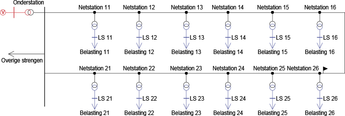In de MS-distributiering van figuur 9.25 is een van de scheiders in de kabel tussen knooppunten 'Netstation 16' en 'Netstation 26' geopend. Dit lijkt een logische keuze, met het oog op de netverliezen. Een loadflowberekening geeft inzicht in het netverlies tijdens de maximale belasting. Verplaatsen van de netopening zal aantonen dat het netverlies toeneemt.
In werkelijkheid zijn echter beide strengen niet gelijk van lengte en bevatten zij een ongelijk aantal netstations met ongelijke belastingen. Ook de belastingsprofielen kunnen ongelijk zijn. Om de opening te optimaliseren kan ervoor worden gekozen om de netverliezen te minimaliseren over een periode, waarbij de belastingcyclus in zijn geheel wordt doorlopen. Dit is gedaan voor het voorbeeldnet van figuur 9.25, waarbij in figuur 9.26 het belastingsprofiel van de bovenste streng (Netstation 11 t/m 16) in uurwaarden is weergegeven als 'Belasting 11' en het belastingsprofiel van de onderste streng als 'Belasting 21'.
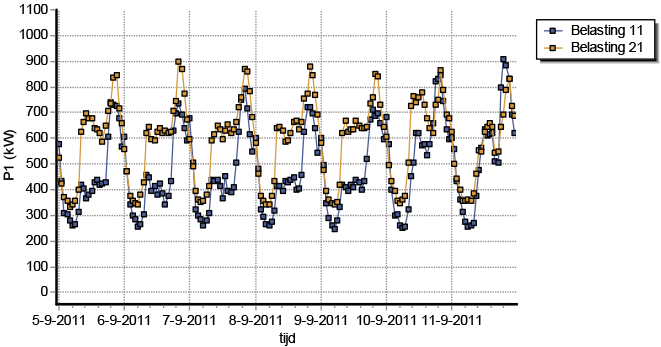Met een loadflowberekening worden voor elk uur de verliesvermogens van alle kabels berekend. Indien deze verliezen voor het gehele uur gelden, zijn de berekende getallen gelijk aan het energieverlies gedurende dat uur:
[ |
9.39 |
] |
Door deze berekening over de periode van een week uit te voeren (168 uren), wordt het totale energieverlies over alle kabels voor de gehele periode als volgt berekend:
[ |
9.40 |
] |
Een berekening van de loadflow voor de gespecificeerde belastingsprofielen kan aantonen of de gekozen locatie voor de netopening inderdaad optimaal is en leidt tot de kleinste verliezen, terwijl bovendien aan de spanningseisen wordt voldaan.
Een distributienet heeft doorgaans één netvoeding. Het is weliswaar mogelijk om in een loadflowberekening meerdere netvoedingen toe te passen, maar hierbij is voorzichtigheid geboden. Indien twee of meer deelnetten gemodelleerd worden, die niet met elkaar verbonden zijn, kan ieder deelnet op een eigen netvoeding worden aangesloten. Indien die deelnetten later met elkaar gekoppeld worden, zullen vereffeningstromen worden berekend die meestal niet kloppen met de werkelijkheid. Dit wordt veroorzaakt door het feit dat een netvoeding is gedefinieerd met een vaste spanning, zowel in grootte als in hoek. De grootte van de spanning is meestal redelijk bekend, maar de hoek is bijna altijd onbekend. Bij het koppelen van meerdere netvoedingen gaan door verschillen in die spanningen stromen lopen. Hierom kan voor het bestuderen van de vereffeningstromen bij (al dan niet van korte duur zijnde) koppelingen het beste ook het hoger gelegen voedende transportnet gemodelleerd worden, zodat met slechts één netvoeding kan worden volstaan. Figuur 9.27 geeft een voorbeeld.
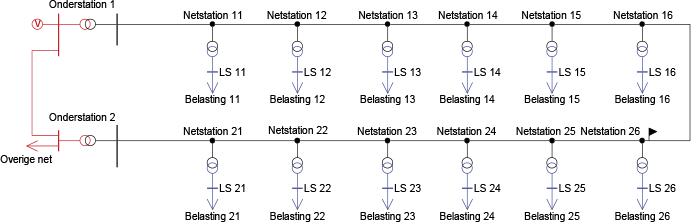Als gevolg van een doortransport in het HS-transportnet ontstaat een spanningsverschil op de HS-rails van beide onderstations. Door de spanningsregelingen van de voedingstransformatoren wordt het spanningsverschil aan de MS-zijden van de beide voedingstransformatoren beperkt, maar het hoekverschil wordt niet geregeld. Dit hoekverschil is ook merkbaar in beide MS-strengen. Indien vanwege onderhoud de scheider bij 'Netstation 26' kortstondig gesloten moet worden, moet het spanningsverschil inclusief de fasehoek beperkt zijn om gevaarlijke situaties te voorkomen. Indien beide MS-strengen gemodelleerd zouden zijn met ieder een eigen netvoeding, wordt een spanningsverschil als gevolg van verschillen in het voedende net niet zichtbaar, waardoor de vereffeningstroom niet berekend kan worden. Meer uitgebreid is hierover gepubliceerd in het kader van het ten behoeve van onderhoud verbinden van deelnetten (Provoost, 2005), (Nuijten, 2006).
Bij twee parallelle transformatoren moet worden opgelet dat beide dezelfde overzetverhouding hebben, om te voorkomen dat ze ongelijk belast worden. De impedantie van een transformator heeft een kleine R/X verhouding, waardoor de reactantie veel groter is dan de weerstand. Dit overwegend reactieve karakter van de transformatorimpedantie heeft tot gevolg dat een ongelijke overzetverhouding zal resulteren in een verschil in blindvermogenstransport. Het actieve vermogenstransport wordt maar beperkt beïnvloed door een ongelijke trapstand. Figuur 9.28 toont een situatie met twee gelijke en gelijk ingestelde transformatoren.

Figuur 9.29 toont dezelfde twee transformatoren, waarbij de trappenschakelaar van transformator T2 met één trap is versteld. Hierdoor is de nominale spanning aan de primaire zijde verlaagd van 132 naar 129,75 kV. Als gevolg neemt het blindvermogenstransport door T2 toe met bijna 10%. Ter vergelijking: het actieve vermogen door T2 neemt slechts toe met bijna 1%.

Indien niet het blindvermogen maar het actieve vermogen zou moeten worden beïnvloed, zou de hoek van de overzetverhouding moeten worden veranderd. Deze zogenaamde dwarsregeltransformatoren komen alleen sporadisch in de HS-transport-netten voor en worden in de distributienetten nooit toegepast.
Phase to Phase is onderdeel van Technolution. © 2009-2021